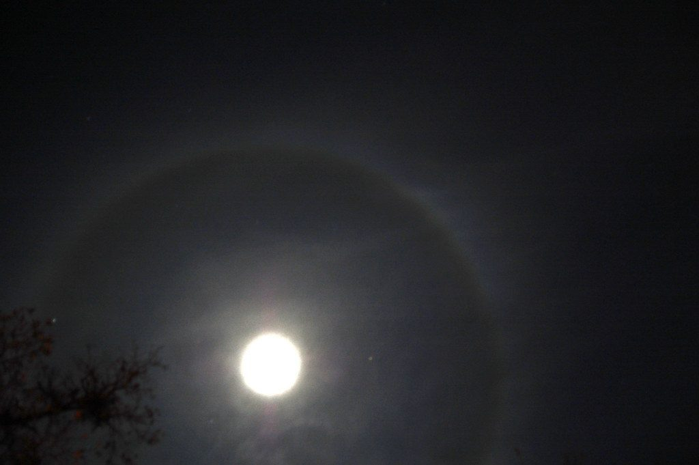
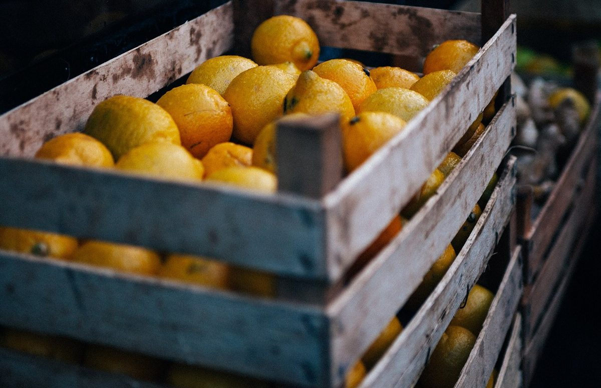

店のこと
店のこと
お店について確認できているのは、所在地・電話番号・Instagramのアカウントです。
このページの「連想してみる」部分は、制作側が想像して書いたもので、お店の実際の様子・考え・メニューとは関係がありません。
確認できていること
- 店名は「OjiCO」、業種はカフェ
- 所在地は三重県松阪市京町２２１(〒515-0017)
- 電話番号は 090-3483-0450
- Instagramは @ojico.0303
- 営業時間・定休日・メニュー・価格・ご予約・駐車場は準備中
連想してみる
ひらいた輪の「C」
屋号の四文字目の「C」は、輪の一か所があいています。制作側はそこから、閉じきらずに、いつでも人が入ってこられる輪を連想しました。お店の姿ではなく、あくまで制作側の連想です。


